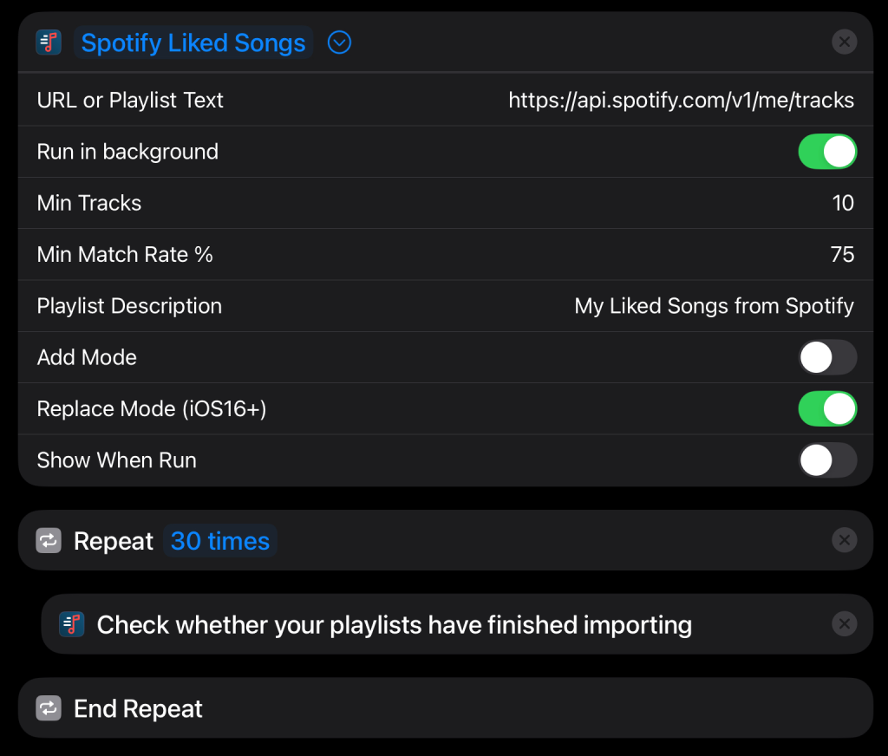

Shortcuts provide powerful task automation capabilities across iOS, iPadOS & macOS devices and they are fully supported by Playlisty. If you’d like to be able to:
- Tap an icon to automatically import & start playing a YouTube chart
- Schedule a daily task to synchronise your favourite Spotify playlist with Apple Music
…then Shortcuts are for you. This section is a technical guide for those with an understanding of the basics of Shortcuts and who want to get the most out of Playlisty. If you’d like to learn about Shortcut basics then we suggest looking elsewhere before continuing here.
You can create a Playlisty Shortcut from within the Shortcuts app itself or (if you are using Playlisty Pro) by tapping the ”Add to Siri” button in Playlisty. See the video below for more details.
Note: after creating a Shortcut we strongly recommend you turn-off the Playlisty parameter “Show when run” from within the Shortcuts app (it’s actually not part of Playlisty – it’s added by the Shortcuts app itself).
Shortcut Actions Supported
Playlisty supports 2 Shortcut actions:
- Import Playlist: This is how you kick-off a playlist import. The easiest way to configure an “Import Playlist” action is to use the “Add to Siri” button on the “Save Playlist” screen in Playlisty. Often that’s all you’ll need to do, but if you want to fine-tune your import please take a look at the shortcut parameters section below. One point to note: when using “Import Playlist” it will return to you the name of the playlist as an output and it will do so as soon as it knows it. This is usually very quickly, and long before the playlist has actually been imported. “Import Playlist” returns quickly so that you can get on with other tasks in your shortcut if you need to, but your shortcut should not assume that the playlist already exists at this point.
- Check imports have finished: This action outputs a true / false boolean value to tell you whether the previous “Import Playlist” command has completed its background processing. If the previous import has completed it will return immediately but if processing is still going on it can take up to 5 seconds to complete. If you wish to import larger playlists in the background then use of the “Check imports have finished” command is essential: you should call it repeatedly (we recommend around 30 times) after an “Import Playlist” command in order to give the Import Playlist enough time to finish importing.
Background vs. Foreground
Shortcuts can invoke Playlisty to perform a playlist import in 2 different modes:
- In the foreground. In this mode, Playlisty will pop-up on screen and start matching the playlist you specify automatically, but will then stop and allow you to take control. Useful if you want to preview a playlist before deciding whether to save it.
- In the background. In this mode you won’t see Playlisty at all unless an error occurs and Playlisty needs to notify you. The playlist import itself will happen quietly in the background.
You can change the mode using a switch within the “Import Playlist” step of your shortcut, see Parameters section below.
Note: If you are using Playlisty in the background it’s important that you periodically check your notification centre for Playlisty messages as this is how you will find out if there have been any problems. In fact we strongly recommend that you tweak your Playlisty notifications (in the Settings app) to enable sounds, badges, banners & lock screen notifications so that you find out about issues immediately. Playlisty will not send you unnecessary notifications.
Finally, if you are using Playlisty in background mode to import larger playlists (250+ tracks) there is an additional step you will need to take. For details, see the next section.
Importing large playlists in the background
Apple implement some strict controls on apps which do background processing in order to stop errant apps from draining the battery of your phone. This is a good thing but it means that whilst importing, say, a 250 track playlist in the background will work fine, importing a 350 track playlist probably won’t. Instead, you will get a notification after 30 seconds or so telling you that the playlist import failed because iOS stopped the task.
The Playlisty “Check imports have finished” command can be used to get around this restriction. Each time your shortcut calls this command it can “lend” a few more seconds background processing time to the previous “Import Playlist” command, giving it a bit more time to finish. You will typically use it in a repeat loop after your Import Playlist command, like in this example which will silently import your Spotify liked songs to an Apple Music playlist called “Spotify Liked Songs”:

Feel free to tweak the number in the Repeat loop but we find that repeating 30 times should give Playlisty enough time to import even very large playlists; e.g. we’ve successfully imported playlists with more than 6,000 rows using this value.
Also when running a background shortcut you MUST turn off the Playlisty ”Show when run” parameter (using the Shortcuts app) as this will stop the Shortcut from reaching the ”Check imports have finished” step.
Note: if you already have shortcuts that use the “Check imports have finished” action and were created for an older version of Playlisty (2.21 or before) then they should still work fine. However we strongly recommend making the following 2 tweaks:
1). Remove any “Wait” actions in your shortcut. The “Check imports have finished” will now automatically wait if needed. Extra “Wait” actions are un-needed and will reduce performance.
2). Increase the number of repetitions. As above, we recommend repeating the “Check imports have finished” command 30 or more times as that should be sufficient for even very large playlists. Really there’s no downside to using a large number here – if there’s nothing to do, the repeats will finish almost instantly.
Parameters
Here are some of the parameters you can tweak in the Import Playlist action:
- Playlist Name (unlabelled first field): You can force Playlisty to store the playlist with a specific name by filling in this field. If you leave this blank, the default name for the playlist will be used. If an existing playlist is found with the name you specify, Playlisty will add a number in brackets to the end of the playlist name e.g. “My Playlist” becomes “My Playlist (1)”. The actual playlist name that Playlisty uses will be sent to you as an output for you to use later in your Shortcut, should you need it.
- URL or Playlist Text: A URL can be something like https://music.youtube.com/playlist?list=RDCLAK5uy_l2zLaMIWOqWSePvTSmt49GcuR8460ZR10 or https://open.spotify.com/playlist/37i9dQZF1DXdPec7aLTmlC?si=eTlo8kQFR2Wn3SJmdHH7sA.
However you can also grab text yourself (e.g. using the “Get Contents of Web Page” Web Request) and pass this in to Playlisty as raw text. Playlisty will then use advanced pattern-matching techniques to try and find a playlist within the text you passed in. - Run in background: Normally Playlisty guides you through the process of importing a playlist. However with this option checked Playlisty will attempt to import your playlist completely in the background, fully automatically. In order to do this you need to supply a few additional parameters, as follows…
- Min Tracks: This is a number. If Playlisty fails to find at least this number of tracks at the URL you specify (e.g. because the playlist is no longer there) it will stop the import and let you know. For example if a playlist is usually about 100 tracks long you might set this value to around 90.
- Min Match Rate %: This is a number between 1 and 100. If Playlisty fails to find a match for at least this %age of the tracks at the URL you specify (e.g. because the page is corrupt in some way) it will stop the import and let you know. Normally this will be set to around 75% or 80%, but if it’s a classical music playlist you might want to choose a lower number.
- Playlist description: This field allows you to specify the description that Apple Music will display below the playlist title.
- Add Mode: This maps to the “Add to existing playlist” option when saving a playlist in the app. When on, the source playlist will be scanned for new tracks which will then be added to the end of the destination playlist. When off, a new playlist will be created each time (with a new name if the playlist already exists).
- Replace Mode: This maps to the “Replace existing playlist” option and is only available on iOS devices running iOS 16 or later. When on, the contents of the destination playlist will be replaced by the contents of the source playlist, ensuring that any new tracks or deletions get mirrored across. If you’ve shared a link to the destination playlist it will continue to work: anyone using the link will see the new, updated contents. Note: “Replace Mode” only works on playlists that were created on a device that already had “Replace Mode” enabled at time of creation.